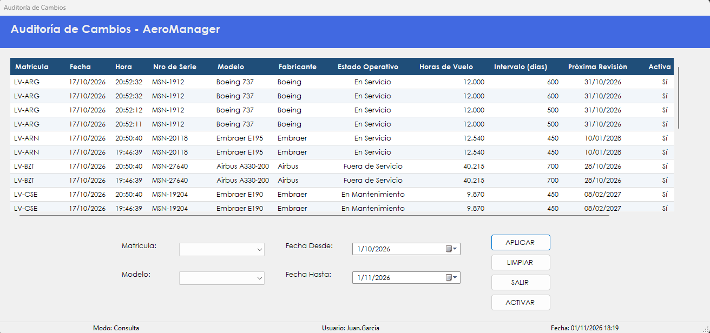

Muestra el historial de cada aeronave y permite restaurarla a un estado anterior sin perder ese historial.
Los datos de una aeronave cambian con el tiempo, y a veces hace falta saber cómo estaban en una fecha determinada o volver atrás después de un error. Esta pantalla lo permite: cada fila de la grilla es el estado en que quedó la aeronave después de un cambio, con la fecha y la hora en que ocurrió.
Para cada aeronave, una sola fila está marcada como vigente en la columna Vigente: es la que coincide con los datos actuales.
Activar una fila anterior restaura esos valores sobre la aeronave. La operación no borra nada del historial: todas las filas siguen disponibles para consultarlas.
No se abre desde el menú. Se llega desde Maestro de aeronaves, con el botón Ver Bitácora de Cambios.

| Control | Para qué se usa |
|---|---|
| Grilla de cambios | Muestra Matrícula, Fecha, Hora, Nro de Serie, Modelo, Fabricante, Estado Operativo, Horas de Vuelo, Intervalo (días), Próxima Revisión, Activa y Vigente. Al hacer clic en un encabezado se ordena por esa columna. |
| Matrícula | Filtra por aeronave. Vacío, incluye todas. |
| Modelo | Filtra por modelo. Vacío, incluye todos. |
| Fecha Desde y Fecha Hasta | Definen el período de la consulta. No pueden superar el día de hoy. |
| APLICAR | Aplica el filtrado seleccionado y presenta en la grilla el resultado de la consulta. También se activa con la tecla Enter. |
| LIMPIAR | Limpia los filtros y vuelve a mostrar la consulta inicial, tal como al ingresar a la pantalla. |
| ACTIVAR | Restaura la aeronave a los valores de la fila seleccionada. |
| SALIR | Vuelve al Maestro de Aeronaves. También se activa con la tecla Esc. |
Atención. Al activar una fila, los datos actuales de la aeronave se reemplazan por los de ese registro.
| Situación | Qué significa y qué hacer |
|---|---|
| "Error al cargar los filtros:" seguido del motivo | No se pudieron cargar las listas de matrículas y modelos. Después de los dos puntos se indica la causa técnica. |
| "Error al recuperar la bitácora de cambios:" seguido del motivo | No se pudo cargar la grilla. Después de los dos puntos se indica la causa técnica. |
| "La fecha hasta no puede ser anterior a la fecha desde." | El período está invertido. Hay que corregir alguna de las dos fechas. |
| "Debe seleccionar un registro de la grilla." | Hay que hacer clic en una fila antes de presionar ACTIVAR. |
| "El registro seleccionado ya es el vigente para esa aeronave." | Esa fila ya coincide con los datos actuales: no hay nada que restaurar. |
| "¿Confirma restaurar la aeronave" seguido de la matrícula, "al estado del" seguido de la fecha y la hora, "? Los datos actuales serán reemplazados por los de ese registro." | Con Sí se restaura; con No no cambia nada. |
| "La aeronave fue restaurada al estado del registro seleccionado." | La operación se completó y esa fila pasa a ser la vigente. |
| "No se pudo activar el registro seleccionado." | La aeronave no cambió. Conviene presionar LIMPIAR y volver a intentar. |
| "Error al activar el registro:" seguido del motivo | La operación no se completó. Después de los dos puntos se indica la causa técnica. |
| "La operación se registró correctamente, pero no pudo asentarse en la Bitácora:" seguido del motivo | La aeronave se restauró, pero el evento no quedó en la bitácora. Después de los dos puntos se muestra el motivo técnico. Conviene avisarle al administrador. |